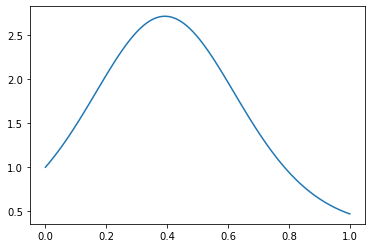
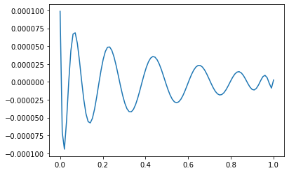
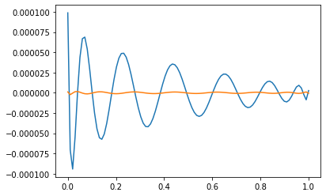

\(\newcommand{\horz}{\rule[.5ex]{2.5ex}{0.5pt}}\)
3.6. Further applications of the SVD#
In this section, we discuss further properties of the SVD. We first introduce additional matrix norms. Throughout this section, \(\|\mathbf{x}\|\) refers to the Euclidean norm (or \(2\)-norm) of \(\mathbf{x}\) (although the concepts we derive below can be extended to other vector norms).
3.6.1. Matrix norms#
Recall that the Frobenius norm of an \(n \times m\) matrix \(A = (a_{i,j})_{i,j} \in \mathbb{R}^{n \times m}\) is defined as
Here we introduce a different notion of matrix norm that has many uses in data science (and beyond).
Induced norm The Frobenius norm does not directly relate to \(A\) as a representation of a linear map. In particular, it is desirable in many contexts to quantify how two matrices differ in terms of how they act on vectors. For instance, one is often interested in bounding quantities of the following form. Let \(B, B' \in \mathbb{R}^{n \times m}\) and let \(\mathbf{x} \in \mathbb{R}^m\) be of unit norm. What can be said about \(\|B \mathbf{x} - B' \mathbf{x}\|\)? Intuitively, what we would like is this: if the norm of \(B - B'\) is small then \(B\) is close to \(B'\) as a linear map, that is, the vector norm \(\|B \mathbf{x} - B' \mathbf{x}\|\) is small for any unit vector \(\mathbf{x}\). The following definition provides us with such a notion. Define the unit sphere \(\mathbb{S}^{m-1} = \{\mathbf{x} \in \mathbb{R}^m\,:\,\|\mathbf{x}\| = 1\}\) in \(m\) dimensions.
DEFINITION (\(2\)-Norm) The \(2\)-norm of a matrix \(A \in \mathbb{R}^{n \times m}\) is
\(\natural\)
The equality in the definition uses the homogeneity of the vector norm. Also the definition implicitly uses the Extreme Value Theorem. In this case, we use the fact that the function \(f(\mathbf{x}) = \|A \mathbf{x}\|\) is continuous and the set \(\mathbb{S}^{m-1}\) is closed and bounded to conclude that there exists \(\mathbf{x}^* \in \mathbb{S}^{m-1}\) such that \(f(\mathbf{x}^*) \geq f(\mathbf{x})\) for all \(\mathbf{x} \in \mathbb{S}^{m-1}\).
The \(2\)-norm of a matrix has many other useful properties. The first four below are what makes it a norm.
LEMMA (Properties of the \(2\)-Norm) Let \(A, B \in \mathbb{R}^{n \times m}\) and \(\alpha \in \mathbb{R}\). The following hold:
a) \(\|A\|_2 \geq 0\)
b) \(\|A\|_2 = 0\) if and only if \(A = 0\)
c) \(\|\alpha A\|_2 = |\alpha| \|A\|_2\)
d) \(\|A + B \|_2 \leq \|A\|_2 + \|B\|_2\)
e) \(\|A B \|_2 \leq \|A\|_2 \|B\|_2\).
f) \(\|A \mathbf{x}\| \leq \|A\|_2 \|\mathbf{x}\|\), \(\forall \mathbf{0} \neq \mathbf{x} \in \mathbb{R}^m\)
\(\flat\)
Proof: These properties all follow from the definition of the \(2\)-norm and the corresponding properties for the vector norm:
Claims a) and f) are immediate from the definition.
For b) note that \(\|A\|_2 = 0\) implies \(\|A \mathbf{x}\|_2 = 0, \forall \mathbf{x} \in \mathbb{S}^{m-1}\), so that \(A \mathbf{x} = \mathbf{0}, \forall \mathbf{x} \in \mathbb{S}^{m-1}\). In particular, \(a_{ij} = \mathbf{e}_i^T A \mathbf{e}_j = 0, \forall i,j\).
For c), d), e), observe that for all \(\mathbf{x} \in \mathbb{S}^{m-1}\)
Then apply the definition of \(2\)-norm. For example, for ©,
where we used that \(|\alpha|\) does not depend on \(\mathbf{x}\). \(\square\)
NUMERICAL CORNER: In Numpy, the Frobenius norm of a matrix can be computed using the default of the function numpy.linalg.norm while the induced norm can be computed using the same function with ord parameter set to 2.
A = np.array([[1., 0.],[0., 1.],[0., 0.]])
print(A)
[[1. 0.]
[0. 1.]
[0. 0.]]
LA.norm(A)
1.4142135623730951
LA.norm(A, 2)
1.0
\(\unlhd\)
Matrix norms and SVD As it turns out, the two notions of matrix norms we have introduced admit simple expressions in terms of the singular values of the matrix.
LEMMA (Matrix Norms and Singular Values) Let \(A \in \mathbb{R}^{n \times m}\) be a matrix with compact SVD
where recall that \(\sigma_1 \geq \sigma_2 \geq \cdots \sigma_r > 0\). Then
and
\(\flat\)
Proof: (First proof) We will use the notation \(\mathbf{v}_\ell = (v_{\ell,1},\ldots,v_{\ell,m})^T\). Using that the squared Frobenius norm of \(A\) is the sum of the squared norms of its columns, we have
Because the \(\mathbf{u}_\ell\)’s are orthonormal, this is
where we used that the \(\mathbf{v}_\ell\)’s are also orthonormal.
For the second claim, recall that the \(2\)-norm is defined as
We have shown previously that \(\mathbf{v}_1\) solves this problem. Hence \(\|A\|_2^2 = \|A \mathbf{v}_1\|^2 = \sigma_1^2\). \(\square\)
Proof: (Second proof) We give a second proof of the second claim that does not use the greedy sequence. Because the \(\mathbf{u}_j\)’s are orthonormal we have
Here \(\langle \mathbf{v}_\ell, \mathbf{x} \rangle^2 \geq 0\) for all \(\ell\) and further
since the \(\mathbf{v}_\ell\)’s form an orthonormal basis of the row space of \(A\). By Pythagoras, for a unit norm vector \(\mathbf{x}\),
where we used the orthogonality of \(\mathbf{x} - \mathrm{proj}_{\mathrm{row}(A)} \mathbf{x}\) and \(\mathrm{proj}_{\mathrm{row}(A)} \mathbf{x}\). That implies in particular that, necessarily, \(\left\|\mathrm{proj}_{\mathrm{row}(A)} \mathbf{x}\right\|^2 \leq 1\).
Plugging this above, we get \(\sum_{\ell=1}^r \langle \mathbf{v}_\ell, \mathbf{x} \rangle^2 \leq 1\). Going back to our expression for \(\|A \mathbf{x}\|^2\), we have by using \(\sigma_1 \geq \sigma_\ell\) for all \(\ell\) that
On the other hand, \(\mathbf{v}_1\) is a unit norm vector such that
Hence
\(\square\)
EXAMPLE: Let \(A \in \mathbb{R}^{n \times m}\) be a matrix with compact SVD
where recall that \(\sigma_1 \geq \sigma_2 \geq \cdots \sigma_r > 0\). The proof above can be used to bound the range of possible values for \(\|A \mathbf{x}\|\) with \(\mathbf{x}\) a unit vector. If \(r < m\), then \(\mathrm{null}(A)\) contains nonzero vectors and we have
with endpoints achieved.
Suppose now that \(r = m\). In that case, \(\mathrm{row}(A) = \mathbb{R}^m\) and the right singular vectors \(\mathbf{v}_1,\ldots,\mathbf{v}_m\) form an orthonormal basis of \(\mathbb{R}^m\). Hence, for any unit vector \(\mathbf{x}\),
As a result, we have by using \(\sigma_n \leq \sigma_\ell\) for all \(\ell\) that
We have shown in that case that
The endpoints are achieved by taking \(\mathbf{x} = \mathbf{v}_m\) and \(\mathbf{x} = \mathbf{v}_1\) respectively.
Put differently,
(If \(\sigma_m\) denotes the smallest singular value in the full SVD, then the above expressions hold generally.) \(\lhd\)
3.6.2. Pseudoinverse#
The SVD leads to a natural generalization of the matrix inverse. First an observation. Recall that, to take the product of two square diagonal matrices, we simply multiply the corresponding diagonal entries. Let \(\Sigma \in \mathbb{R}^{r \times r}\) be a square diagonal matrix with diagonal entries \(\sigma_1,\ldots,\sigma_r\). If all diagonal entries are non-zero, then the matrix is invertible (since its columns then form a basis of the full space). The inverse of \(\Sigma\) in that case is simply the diagonal matrix \(\Sigma^{-1}\) with diagonal entries \(\sigma_1^{-1},\ldots,\sigma_r^{-1}\). This can be confirmed by checking the definition of the inverse
We are ready for our main definition.
DEFINITION (Pseudoinverse) Let \(A \in \mathbb{R}^{n \times m}\) be a matrix with compact SVD \(A = U \Sigma V^T\) and singular values \(\sigma_1 \geq \cdots \geq \sigma_r > 0\). A pseudoinverse \(A^+ \in \mathbb{R}^{m \times n}\) is defined as
\(\natural\)
While it is not obvious from the definition (why?), the pseudoinverse is in fact unique. To see that it is indeed a generalization of an inverse, we make a series of observations.
Observation 1: Note that, using that \(U\) has orthonormal columns,
which in general in not the identity matrix. Indeed it corresponds instead to the projection matrix onto the column space of \(A\), since the columns of \(U\) form an orthonormal basis of that linear subspace. As a result
So \(A A^+\) is not the identity matrix, but it does map the columns of \(A\) to themselves. Put differently, it is the identity map “when restricted to \(\mathrm{col}(A)\)”.
Similarly,
is the projection matrix onto the row space of \(A\), and
Observation 2: If \(A\) has full column rank \(m \leq n\), then \(r = m\). In that case, the columns of \(V\) form an orthonormal basis of all of \(\mathbb{R}^m\), i.e., \(V\) is orthogonal. Hence,
Similarly, if \(A\) has full row rank \(n \leq m\), then \(A A^+ = I_{n \times n}\).
If both cases hold, then \(n = m\), i.e., \(A\) is square, and \(\mathrm{rk}(A) = n\), i.e., \(A\) is invertible. We then get
That implies that \(A^+ = A^{-1}\) by the Existence of an Inverse Lemma (which includes uniqueness of the matrix inverse).
Observation 3: Recall that, when \(A\) is nonsingular, the system \(A \mathbf{x} = \mathbf{b}\) admits the unique solution \(\mathbf{x} = A^{-1} \mathbf{b}\). In the overdetermined case, the pseudoinverse provides a solution to the linear least squares problem.
LEMMA (Pseudoinverse and Least Squares) Let \(A \in \mathbb{R}^{n \times m}\) with \(m \leq n\). A solution to the linear least squares problem
is given by \(\mathbf{x}^* = A^+ \mathbf{b}\). Further, if \(A\) has full column rank \(m\), then
\(\flat\)
Proof idea: For the first part, we use that the solution to the least squares problem is the orthogonal projection. For the second part, we use the SVD definition and check that the two sides are the same.
Proof: Let \(A = U \Sigma V^T\) be a compact SVD of \(A\). For the first claim, note that the choice of \(\mathbf{x}^*\) in the statement gives
Hence, \(A \mathbf{x}^*\) is the orthogonal projection of \(\mathbf{b}\) onto the column space of \(A\) - which we proved previously is the solution to the linear least squares problem.
Now onto the second claim. Recall that, when \(A\) is of full rank, the matrix \(A^T A\) is nonsingular. We then note that, using the notation \(\Sigma^{-2} = (\Sigma^{-1})^2\),
as claimed. Here, we used that \((V \Sigma^2 V^T)^{-1} = V \Sigma^{-2} V^T\), which can be confirmed by checking the definition of an inverse and our previous observation about the inverse of a diagonal matrix. \(\square\)
The pseudoinverse also provides a solution in the case of an underdetermined system. Here, however, there are in general infinitely many solutions. The one chosen by the pseudoinverse has a special property as we see now: it is the least norm solution.
LEMMA (Pseudoinverse and Underdetermined Systems) Let \(A \in \mathbb{R}^{n \times m}\) with \(m > n\) and \(\mathbf{b} \in \mathbb{R}^n\). Further assume that \(A\) has full row rank \(n\). Then \(\mathbf{x}^* = A^+ \mathbf{b}\) is a solution to
Moreover, in that case,
\(\flat\)
Proof: We first prove the formula for \(A^+\). As we did in the overdetermined case, it can be checked by substituting a compact SVD \(A = U \Sigma V^T\). Recall that, when \(A^T\) is of full rank, the matrix \(A A^T\) is nonsingular. We then note that
as claimed. Here, we used that \((U \Sigma^2 U^T)^{-1} = U \Sigma^{-2} U^T\), which can be confirmed by checking the definition of an inverse and our previous observation about the inverse of a diagonal matrix.
Because \(A\) has full row rank, \(\mathbf{b} \in \mathrm{col}(A)\) and there is at least one \(\mathbf{x}\) such that \(A \mathbf{x} = \mathbf{b}\). One such solution is provided by the pseudoinverse. Indeed, from a previous observation,
where we used that the columns of \(U\) form an orthonormal basis of \(\mathbb{R}^n\) by the rank assumption.
Let \(\mathbf{x}\) be any other solution to the system. Then \(A(\mathbf{x} - \mathbf{x}^*) = \mathbf{b} - \mathbf{b} = \mathbf{0}\). That implies
In words, \(\mathbf{x} - \mathbf{x}^*\) and \(\mathbf{x}^*\) are orthogonal. By Pythagoras,
That proves that \(\mathbf{x}^*\) has the smallest norm among all solutions to the system \(A \mathbf{x} = \mathbf{b}\). \(\square\)
EXAMPLE: Continuing a previous example, let
Recall that
where
We compute the pseudoinverse. By the formula, in the rank one case, it is simply (Check this!)
\(\lhd\)
EXAMPLE: Let \(A \in \mathbb{R}^{n \times n}\) be a square nonsingular matrix. Let \(A = \sum_{j=1}^n \sigma_j \mathbf{u}_j \mathbf{v}_j^T\) be a compact SVD of \(A\), where we used the fact that the rank of \(A\) is \(n\) so it has \(n\) strictly positive singular values. We seek to compute \(\|A^{-1}\|_2\) in terms of the singular values.
Because \(A\) is invertible, \(A^+ = A^{-1}\). So we compute the pseudoinverse
The sum on the right-hand side is not quite a compact SVD of \(A^{-1}\) because the coefficients \(\sigma_j^{-1}\) are non-decreasing in \(j\).
But writing the sum in reverse order
does give a compact SVD of \(A^{-1}\), since \(\sigma_n^{-1} \geq \cdots \sigma_1^{-1} > 0\) and \(\{\mathbf{v}_j\}_{j=1}^n\) and \(\{\mathbf{u}_j\}_{j=1}^n\) are orthonormal lists. Hence, the \(2\)-norm is given by the largest singular value, that is,
\(\lhd\)
NUMERICAL CORNER: In Numpy, the pseudoinverse of a matrix can be computed using the function numpy.linalg.pinv.
M = np.array([[1.5, 1.3], [1.2, 1.9], [2.1, 0.8]])
print(M)
[[1.5 1.3]
[1.2 1.9]
[2.1 0.8]]
Mp = LA.pinv(M)
print(Mp)
[[ 0.09305394 -0.31101404 0.58744568]
[ 0.12627124 0.62930858 -0.44979865]]
Mp @ M
array([[ 1.00000000e+00, -4.05255527e-17],
[ 2.59810071e-16, 1.00000000e+00]])
Let’s try our previous example.
A = np.array([[1., 0.], [-1., 0.]])
print(A)
[[ 1. 0.]
[-1. 0.]]
Ap = LA.pinv(A)
print(Ap)
[[ 0.5 -0.5]
[ 0. 0. ]]
\(\unlhd\)
3.6.3. Condition numbers#
In this section we introduce condition numbers, a measure of perturbation sensitivity for numerical problems. We look in particular at the conditioning of the least-squares problem. We begin with the concept of pseudoinverse, which is important in its own right.
Conditioning of matrix-vector multiplication We define the condition number of a matrix and show that it captures some information about the sensitivity to perturbations of matrix-vector multiplications.
DEFINITION (Condition number of a matrix) The condition number (in the induced \(2\)-norm) of a square, nonsingular matrix \(A \in \mathbb{R}^{n \times n}\) is defined as
\(\natural\)
In fact, this can be computed as
where we used the example above. In words, \(\kappa_2(A)\) is the ratio of the largest to the smallest stretching under \(A\).
THEOREM (Conditioning of Matrix-Vector Multiplication) Let \(M \in \mathbb{R}^{n \times n}\) be nonsingular. Then, for any \(\mathbf{z} \in \mathbb{R}^n\),
and the inequality is tight in the sense that there is an \(\mathbf{x}\) and a \(\mathbf{d}\) that achieves it.
\(\sharp\)
The ratio above measures the worst rate of relative change in \(M \mathbf{z}\) under infinitesimal perturbations of \(\mathbf{z}\). The theorem says that when \(\kappa_2(M)\) is large, a case referred to as ill-conditioning, large relative changes in \(M \mathbf{z}\) can be obtained from relatively small perturbations to \(\mathbf{z}\). In words, a matrix-vector product is potentially sensitive to perturbations when the matrix is ill-conditioned.
Proof: Write
where we used \(\min_{\mathbf{u} \in \mathbb{S}^{n-1}} \|A \mathbf{u}\| = \sigma_n\), which was shown in a previous example.
In particular, we see that the ratio can achieve its maximum by taking \(\mathbf{d}\) and \(\mathbf{z}\) to be the right singular vectors corresponding to \(\sigma_1\) and \(\sigma_n\) respectively. \(\square\)
If we apply the theorem to the inverse instead, we get that the relative conditioning of the nonsingular linear system \(A \mathbf{x} = \mathbf{b}\) to perturbations in \(\mathbf{b}\) is \(\kappa_2(A)\). The latter can be large in particular when the columns of \(A\) are close to linearly dependent. This is detailed in the next example.
EXAMPLE: Let \(A \in \mathbb{R}^{n \times n}\) be nonsingular. Then, for any \(\mathbf{b} \in \mathbb{R}^n\), there exists a unique solution to \(A \mathbf{x} = \mathbf{b}\), namely,
Suppose we solve the perturbed system
for some vector \(\delta\mathbf{b}\). We use the Conditioning of Matrix-Vector Multiplication Theorem to bound the norm of \(\delta\mathbf{x}\).
Specifically, set
Then
and
So we get that
Note also that, because \((A^{-1})^{-1} = A\), we have \(\kappa_2(A^{-1}) = \kappa_2(A)\). Rearranging, we finally get
Hence the larger the condition number is, the larger the potential relative effect on the solution of the linear system is for a given relative perturbation size. \(\lhd\)
NUMERICAL CORNER: In Numpy, the condition number of a matrix can be computed using the function numpy.linalg.cond.
For example, orthogonal matrices have condition number \(1\), the lowest possible value for it (Why?). That indicates that orthogonal matrices have good numerical properties.
q = 1/np.sqrt(2)
Q = np.array([[q, q], [q, -q]])
print(Q)
[[ 0.70710678 0.70710678]
[ 0.70710678 -0.70710678]]
LA.cond(Q)
1.0000000000000002
In contrast, matrices with nearly linearly dependent columns have large condition numbers.
eps = 1e-6
A = np.array([[q, q], [q, q+eps]])
print(A)
[[0.70710678 0.70710678]
[0.70710678 0.70710778]]
LA.cond(A)
2828429.1245844117
Let’s look at the SVD of \(A\).
u, s, vh = LA.svd(A)
print(s)
[1.41421406e+00 4.99999823e-07]
We compute the solution to \(A \mathbf{x} = \mathbf{b}\) when \(\mathbf{b}\) is the left singular vector of \(A\) corresponding to the largest singular value. Recall that in the proof of the Conditioning of Matrix-Vector Multiplication Theorem, we showed that the worst case bound is achieved when \(\mathbf{z} = \mathbf{b}\) is right singular vector of \(M= A^{-1}\) corresponding to the lowest singular value. In a previous example, given a matrix \(A = \sum_{j=1}^n \sigma_j \mathbf{u}_j \mathbf{v}_j^T\) in compact SVD form, we derived a compact SVD for the inverse as
Here, compared to the SVD of \(A\), the order of the singular values is reversed and the roles of the left and right singular vectors are exchanged. So we take \(\mathbf{b}\) to be the top left singular vector of \(A\).
b = u[:,0]
print(b)
[-0.70710653 -0.70710703]
x = LA.solve(A,b)
print(x)
[-0.49999965 -0.5 ]
We make a small perturbation in the direction of the second right singular vector. Recall that in the proof of the Conditioning of Matrix-Vector Multiplication Theorem, we showed that the worst case is achieved when \(\mathbf{d} = \delta\mathbf{b}\) is top right singular vector of \(M = A^{-1}\). By the argument above, that is the left singular vector of \(A\) corresponding to the lowest singular value.
delta = 1e-6
bp = b + delta*u[:,1]
print(bp)
[-0.70710724 -0.70710632]
The relative change in solution is:
xp = LA.solve(A,bp)
print(xp)
[-1.91421421 0.91421356]
(LA.norm(x-xp)/LA.norm(x))/(LA.norm(b-bp)/LA.norm(b))
2828429.1246659174
Note that this is exactly the condition number of \(A\).
\(\unlhd\)
Back to the least-squares problem We return to the least-squares problem
where
We showed that the solution satisfies the normal equations
Here \(A\) may not be square and invertible. We define a more general notion of condition number.
DEFINITION (Condition number of a matrix: general case) The condition number (in the induced \(2\)-norm) of a matrix \(A \in \mathbb{R}^{n \times m}\) is defined as
\(\natural\)
As we show next, the condition number of \(A^T A\) can be much larger than that of \(A\) itself.
LEMMA (Condition number of \(A^T A\)) Let \(A \in \mathbb{R}^{n \times m}\) have full column rank. The
\(\flat\)
Proof idea: We use the SVD.
Proof: Let \(A = U \Sigma V^T\) be an SVD of \(A\) with singular values \(\sigma_1 \geq \cdots \geq \sigma_m > 0\). Then
In particular the latter expression is an SVD of \(A^T A\), and hence the condition number of \(A^T A\) is
\(\square\)
NUMERICAL CORNER: We give a quick example.
A = np.array([[1., 101.],[1., 102.],[1., 103.],[1., 104.],[1., 105]])
print(A)
[[ 1. 101.]
[ 1. 102.]
[ 1. 103.]
[ 1. 104.]
[ 1. 105.]]
LA.cond(A)
7503.817028686101
LA.cond(A.T @ A)
56307270.00472849
This observation – and the resulting increased numerical instability – is one of the reasons we previously developed an alternative approach to the least-squares problem. Quoting [Sol, Section 5.1]:
Intuitively, a primary reason that \(\mathrm{cond}(A^T A)\) can be large is that columns of \(A\) might look “similar” […] If two columns \(\mathbf{a}_i\) and \(\mathbf{a}_j\) satisfy \(\mathbf{a}_i \approx \mathbf{a}_j\), then the least-squares residual length \(\|\mathbf{b} - A \mathbf{x}\|_2\) will not suffer much if we replace multiples of \(\mathbf{a}_i\) with multiples of \(\mathbf{a}_j\) or vice versa. This wide range of nearly—but not completely—equivalent solutions yields poor conditioning. […] To solve such poorly conditioned problems, we will employ an alternative technique with closer attention to the column space of \(A\) rather than employing row operations as in Gaussian elimination. This strategy identifies and deals with such near-dependencies explicitly, bringing about greater numerical stability.
\(\unlhd\)
We quote without proof a theorem from [Ste, Theorem 4.2.7] which sheds further light on this issue.
THEOREM (Accuracy of Least-squares Solutions) Let \(\mathbf{x}^*\) be the solution of the least-squares problem \(\min_{\mathbf{x} \in \mathbb{R}^m} \|A \mathbf{x} - \mathbf{b}\|\). Let \(\mathbf{x}_{\mathrm{NE}}\) be the solution obtained by forming and solving the normal equations in floating-point arithmetic with rounding unit \(\epsilon_M\). Then \(\mathbf{x}_{\mathrm{NE}}\) satisfies
Let \(\mathbf{x}_{\mathrm{QR}}\) be the solution obtained from a QR factorization in the same arithmetic. Then
where \(\mathbf{r}^* = \mathbf{b} - A \mathbf{x}^*\) is the residual vector. The constants \(\gamma\) are slowly growing functions of the dimensions of the problem.
\(\sharp\)
To explain, let’s quote [Ste, Section 4.2.3] again:
The perturbation theory for the normal equations shows that \(\kappa_2^2(A)\) controls the size of the errors we can expect. The bound for the solution computed from the QR equation also has a term multiplied by \(\kappa_2^2(A)\), but this term is also multiplied by the scaled residual, which can diminish its effect. However, in many applications the vector \(\mathbf{b}\) is contaminated with error, and the residual can, in general, be no smaller than the size of that error.
NUMERICAL CORNER: Here is a numerical example taken from [TB, Lecture 19]. We will approximate the following function with a polynomial.
n = 100
t = np.arange(n)/(n-1)
b = np.exp(np.sin(4 * t))
Show code cell source
plt.plot(t, b)
plt.show()

We use a Vandermonde matrix, which can be constructed using numpy.vander, to perform polynomial regression.
m = 17
A = np.vander(t, m, increasing=True)
The condition numbers of \(A\) and \(A^T A\) are both high in this case.
print(LA.cond(A))
755824002352.298
print(LA.cond(A.T @ A))
3.88849322207879e+17
We first use the normal equations and plot the residual vector.
xNE = LA.solve(A.T @ A, A.T @ b)
print(LA.norm(b - A@xNE))
0.00030505165593287825
Show code cell source
plt.plot(t, b - A@xNE)
plt.show()

We then use numpy.linalg.qr to compute the QR solution instead.
Q, R = LA.qr(A)
xQR = mmids.backsubs(R, Q.T @ b)
print(LA.norm(b - A@xQR))
7.3597306595398145e-06
Show code cell source
plt.plot(t, b - A@xNE)
plt.plot(t, b - A@xQR)
plt.show()

\(\unlhd\)